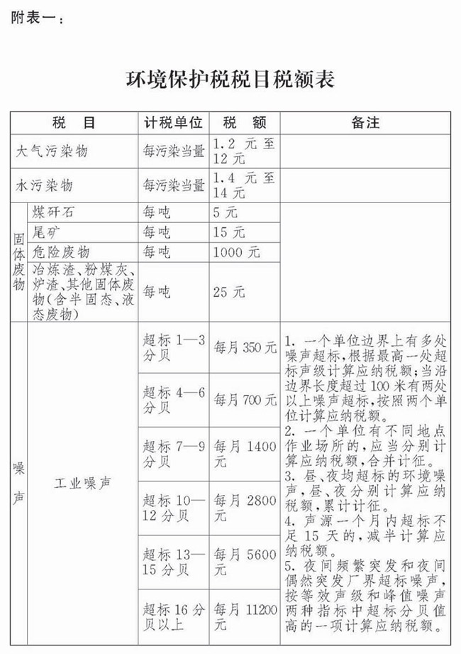
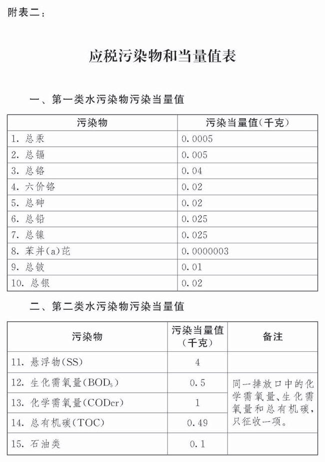
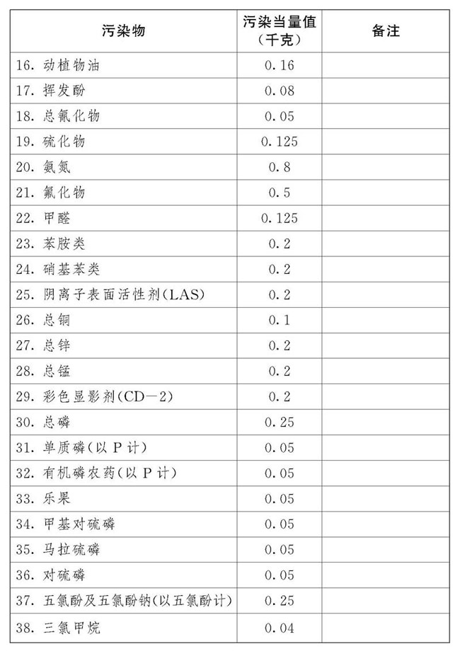
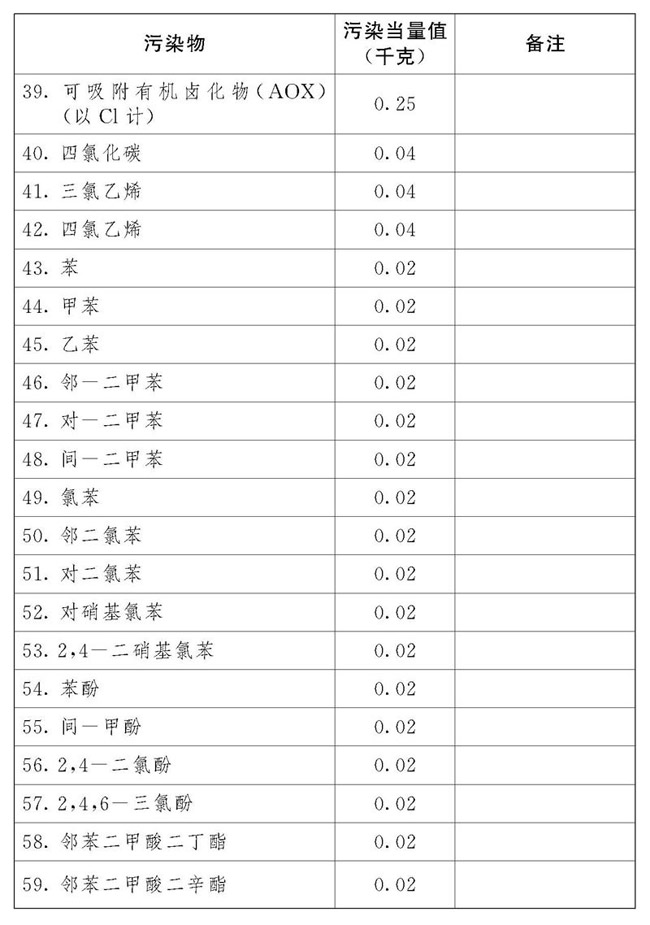
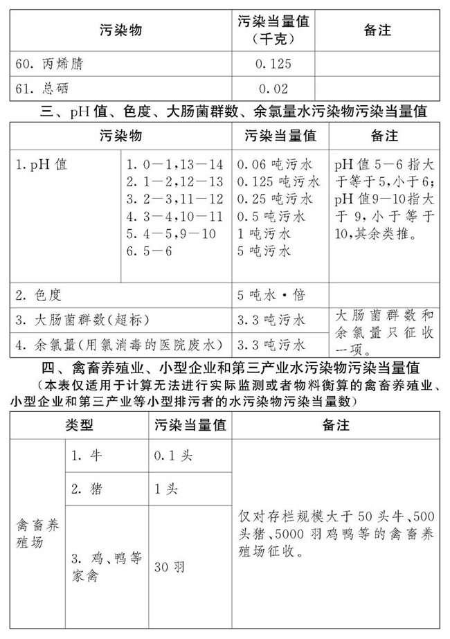
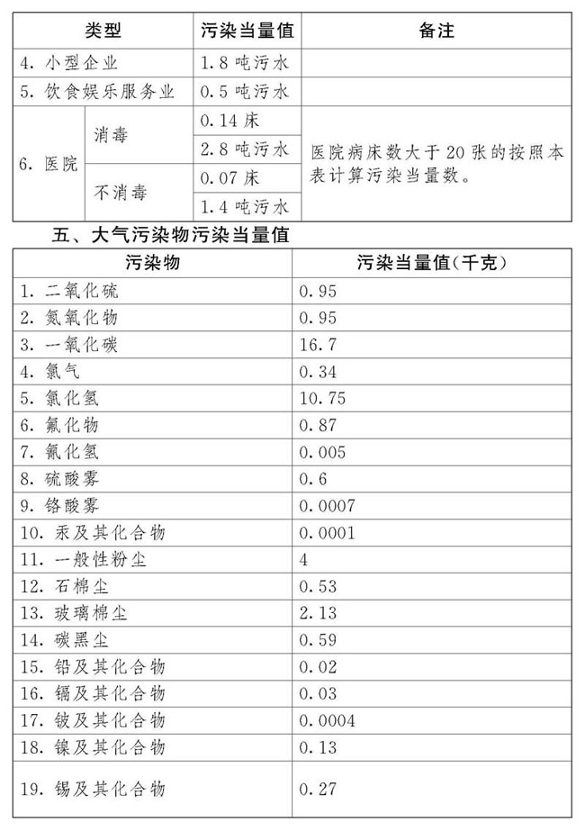
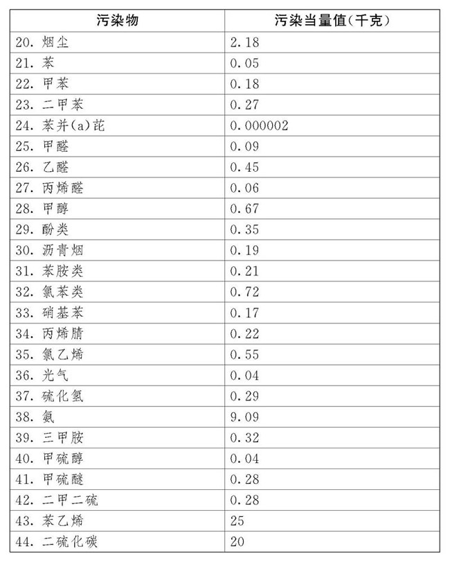

中华人民共和国环境保护税法
（
目 录
第一章 总 则
第二章 计税依据和应纳税额
第三章 税收减免
第四章 征收管理
第五章 附 则
第一章 总 则
第一条 为了保护和改善环境,减少污染物排放，推进生态文明建设，制定本法。
第二条 在中华人民共和国领域和中华人民共和国管辖的其他海域，直接向环境排放应税污染物的企业事业单位和其他生产经营者为环境保护税的纳税人，应当依照本法规定缴纳环境保护税。
第三条 本法所称应税污染物，是指本法所附《环境保护税税目税额表》、《应税污染物和当量值表》规定的大气污染物、水污染物、固体废物和噪声。
第四条 有下列情形之一的，不属于直接向环境排放污染物，不缴纳相应污染物的环境保护税：
（一）企业事业单位和其他生产经营者向依法设立的污水集中处理、生活垃圾集中处理场所排放应税污染物的；
（二）企业事业单位和其他生产经营者在符合国家和地方环境保护标准的设施、场所贮存或者处置固体废物的。
第五条 依法设立的城乡污水集中处理、生活垃圾集中处理场所超过国家和地方规定的排放标准向环境排放应税污染物的，应当缴纳环境保护税。
企业事业单位和其他生产经营者贮存或者处置固体废物不符合国家和地方环境保护标准的，应当缴纳环境保护税。
第六条 环境保护税的税目、税额，依照本法所附《环境保护税税目税额表》执行。
应税大气污染物和水污染物的具体适用税额的确定和调整，由省、自治区、直辖市人民政府统筹考虑本地区环境承载能力、污染物排放现状和经济社会生态发展目标要求，在本法所附《环境保护税税目税额表》规定的税额幅度内提出，报同级人民代表大会常务委员会决定，并报全国人民代表大会常务委员会和国务院备案。
第二章 计税依据和应纳税额
第七条 应税污染物的计税依据，按照下列方法确定：
（一）应税大气污染物按照污染物排放量折合的污染当量数确定；
（二）应税水污染物按照污染物排放量折合的污染当量数确定；
（三）应税固体废物按照固体废物的排放量确定；
（四）应税噪声按照超过国家规定标准的分贝数确定。
第八条 应税大气污染物、水污染物的污染当量数，以该污染物的排放量除以该污染物的污染当量值计算。每种应税大气污染物、水污染物的具体污染当量值，依照本法所附《应税污染物和当量值表》执行。
第九条 每一排放口或者没有排放口的应税大气污染物，按照污染当量数从大到小排序,对前三项污染物征收环境保护税。
每一排放口的应税水污染物，按照本法所附《应税污染物和当量值表》，区分第一类水污染物和其他类水污染物，按照污染当量数从大到小排序，对第一类水污染物按照前五项征收环境保护税，对其他类水污染物按照前三项征收环境保护税。
省、自治区、直辖市人民政府根据本地区污染物减排的特殊需要，可以增加同一排放口征收环境保护税的应税污染物项目数，报同级人民代表大会常务委员会决定，并报全国人民代表大会常务委员会和国务院备案。
第十条 应税大气污染物、水污染物、固体废物的排放量和噪声的分贝数，按照下列方法和顺序计算：
（一）纳税人安装使用符合国家规定和监测规范的污染物自动监测设备的，按照污染物自动监测数据计算；
（二）纳税人未安装使用污染物自动监测设备的，按照监测机构出具的符合国家有关规定和监测规范的监测数据计算；
（三）因排放污染物种类多等原因不具备监测条件的，按照国务院环境保护主管部门规定的排污系数、物料衡算方法计算；
（四）不能按照本条第一项至第三项规定的方法计算的，按照省、自治区、直辖市人民政府环境保护主管部门规定的抽样测算的方法核定计算。
第十一条 环境保护税应纳税额按照下列方法计算：
（一）应税大气污染物的应纳税额为污染当量数乘以具体适用税额；
（二）应税水污染物的应纳税额为污染当量数乘以具体适用税额；
（三）应税固体废物的应纳税额为固体废物排放量乘以具体适用税额；
（四）应税噪声的应纳税额为超过国家规定标准的分贝数对应的具体适用税额。
第三章 税收减免
第十二条 下列情形，暂予免征环境保护税：
（一）农业生产（不包括规模化养殖）排放应税污染物的；
（二）机动车、铁路机车、非道路移动机械、船舶和航空器等流动污染源排放应税污染物的；
（三）依法设立的城乡污水集中处理、生活垃圾集中处理场所排放相应应税污染物，不超过国家和地方规定的排放标准的；
（四）纳税人综合利用的固体废物，符合国家和地方环境保护标准的；
（五）国务院批准免税的其他情形。
前款第五项免税规定，由国务院报全国人民代表大会常务委员会备案。
第十三条 纳税人排放应税大气污染物或者水污染物的浓度值低于国家和地方规定的污染物排放标准百分之三十的，减按百分之七十五征收环境保护税。纳税人排放应税大气污染物或者水污染物的浓度值低于国家和地方规定的污染物排放标准百分之五十的，减按百分之五十征收环境保护税。
第四章 征收管理
第十四条 环境保护税由税务机关依照《中华人民共和国税收征收管理法》和本法的有关规定征收管理。
环境保护主管部门依照本法和有关环境保护法律法规的规定负责对污染物的监测管理。
县级以上地方人民政府应当建立税务机关、环境保护主管部门和其他相关单位分工协作工作机制，加强环境保护税征收管理，保障税款及时足额入库。
第十五条 环境保护主管部门和税务机关应当建立涉税信息共享平台和工作配合机制。
环境保护主管部门应当将排污单位的排污许可、污染物排放数据、环境违法和受行政处罚情况等环境保护相关信息，定期交送税务机关。
税务机关应当将纳税人的纳税申报、税款入库、减免税额、欠缴税款以及风险疑点等环境保护税涉税信息，定期交送环境保护主管部门。
第十六条 纳税义务发生时间为纳税人排放应税污染物的当日。
第十七条 纳税人应当向应税污染物排放地的税务机关申报缴纳环境保护税。
第十八条 环境保护税按月计算，按季申报缴纳。不能按固定期限计算缴纳的，可以按次申报缴纳。
纳税人申报缴纳时，应当向税务机关报送所排放应税污染物的种类、数量，大气污染物、水污染物的浓度值，以及税务机关根据实际需要要求纳税人报送的其他纳税资料。
第十九条 纳税人按季申报缴纳的，应当自季度终了之日起十五日内，向税务机关办理纳税申报并缴纳税款。纳税人按次申报缴纳的，应当自纳税义务发生之日起十五日内，向税务机关办理纳税申报并缴纳税款。
纳税人应当依法如实办理纳税申报，对申报的真实性和完整性承担责任。
第二十条 税务机关应当将纳税人的纳税申报数据资料与环境保护主管部门交送的相关数据资料进行比对。
税务机关发现纳税人的纳税申报数据资料异常或者纳税人未按照规定期限办理纳税申报的，可以提请环境保护主管部门进行复核，环境保护主管部门应当自收到税务机关的数据资料之日起十五日内向税务机关出具复核意见。税务机关应当按照环境保护主管部门复核的数据资料调整纳税人的应纳税额。
第二十一条 依照本法第十条第四项的规定核定计算污染物排放量的，由税务机关会同环境保护主管部门核定污染物排放种类、数量和应纳税额。
第二十二条 纳税人从事海洋工程向中华人民共和国管辖海域排放应税大气污染物、水污染物或者固体废物，申报缴纳环境保护税的具体办法，由国务院税务主管部门会同国务院海洋主管部门规定。
第二十三条 纳税人和税务机关、环境保护主管部门及其工作人员违反本法规定的，依照《中华人民共和国税收征收管理法》、《中华人民共和国环境保护法》和有关法律法规的规定追究法律责任。
第二十四条 各级人民政府应当鼓励纳税人加大环境保护建设投入，对纳税人用于污染物自动监测设备的投资予以资金和政策支持。
第五章 附 则
第二十五条 本法下列用语的含义：
（一）污染当量，是指根据污染物或者污染排放活动对环境的有害程度以及处理的技术经济性，衡量不同污染物对环境污染的综合性指标或者计量单位。同一介质相同污染当量的不同污染物，其污染程度基本相当。
（二）排污系数，是指在正常技术经济和管理条件下，生产单位产品所应排放的污染物量的统计平均值。
（三）物料衡算，是指根据物质质量守恒原理对生产过程中使用的原料、生产的产品和产生的废物等进行测算的一种方法。
第二十六条 直接向环境排放应税污染物的企业事业单位和其他生产经营者，除依照本法规定缴纳环境保护税外，应当对所造成的损害依法承担责任。
第二十七条 自本法施行之日起，依照本法规定征收环境保护税，不再征收排污费。
第二十八条 本法自






